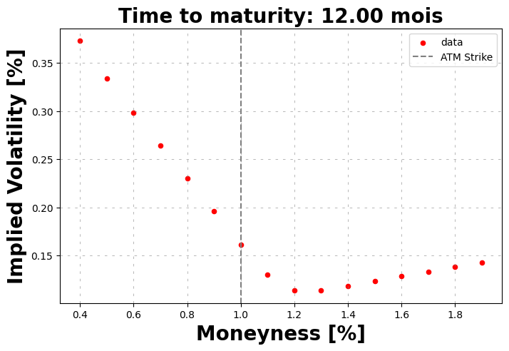

Impact of parameters#
[ ]:
from hestonpy.models.heston import Heston
from hestonpy.models.volatilitySmile import VolatilitySmile, fontdict
import numpy as np
import pandas as pd
import matplotlib.pyplot as plt
import matplotlib.gridspec as gridspec
[ ]:
# Paramètres initiaux du modèle Heston
spot = 100 # Prix spot
vol_initial = 0.02 # Variance initiale
r = 0.00
params = {
"kappa": 1.25,
"theta": 0.06,
"drift_emm": 0.00,
"sigma": 0.6,
"rho": -0.8,
}
time_to_maturity = 1
model = Heston(spot, vol_initial, r, **params)
strikes = np.arange(40, 200, 10)
prices = model.call_price(strike=strikes, time_to_maturity=time_to_maturity)
smile = VolatilitySmile(strikes=strikes, time_to_maturity=1, atm=spot, market_prices=prices)
smile.plot()
[ ]:
# Paramètres de base du modèle Heston
base_params = {
"vol_initial": 0.02, # Variance initiale
"kappa": 2.0, # Vitesse de réversion
"theta": 0.02, # Variance à long terme
"sigma": 0.5, # Volatilité de la variance
"rho": -0.5, # Corrélation
}
# Définition des paramètres à tester
params_to_test = {
"vol_initial": [0.01, 0.02, 0.03, 0.05, 0.06],
"sigma": [0.1, 0.3, 0.5, 0.7, 0.8],
"kappa": [1.0, 2.0, 3.0, 4.0, 5.0],
"theta": [0.01, 0.03, 0.05, 0.07, 0.10],
"rho": [-0.5, -0.15, 0, 0.15, 0.5],
}
# Dictionnaire pour convertir les noms en LaTex
latex_labels = {
"vol_initial": r"$v_0$",
"sigma": r"$\sigma$",
"kappa": r"$\kappa$",
"theta": r"$\theta$",
"rho": r"$\rho$",
}
strikes = np.arange(40, 200, 5)
fig = plt.figure(figsize=(15, 10))
gs = gridspec.GridSpec(2, 3, figure=fig)
axes = [fig.add_subplot(gs[0, i]) for i in range(3)] # Première ligne
axes.append(fig.add_subplot(gs[1, 0])) # En bas à gauche
axes.append(fig.add_subplot(gs[1, 1:])) # Fusion des deux derniers
# Fonction pour tracer les volatility smiles
def plot_vol_smile(ax, param_name, param_values):
ax.axvline(spot, linestyle="--", color="gray", label="ATM Strike")
for value in param_values:
params = base_params.copy()
params[param_name] = value
model = Heston(spot=spot, r=r, drift_emm=0, **params)
prices = model.call_price(strike=strikes, time_to_maturity=1)
smile = VolatilitySmile(strikes=strikes, atm=spot, market_prices=prices, time_to_maturity=1)
implied_vols = smile.compute_smile(prices)
ax.plot(strikes, implied_vols, label=f'{latex_labels[param_name]} = {value}', marker='+', linestyle="dotted", markersize=4)
ax.set_title(f"Impact of {latex_labels[param_name]} on smile", fontdict=fontdict)
ax.set_xlabel("Strike")
ax.set_ylabel("Implied Volatility [%]", fontdict=fontdict)
ax.grid(visible=True, which="major", linestyle="--", dashes=(5, 10), color="gray", linewidth=0.5, alpha=0.8)
ax.legend()
# Tracer les courbes sur chaque subplot
for i, (param_name, param_values) in enumerate(params_to_test.items()):
plot_vol_smile(axes[i], param_name, param_values)
plt.tight_layout()
plt.show()
